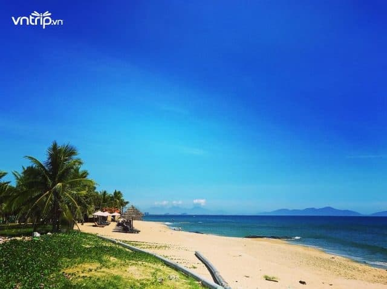
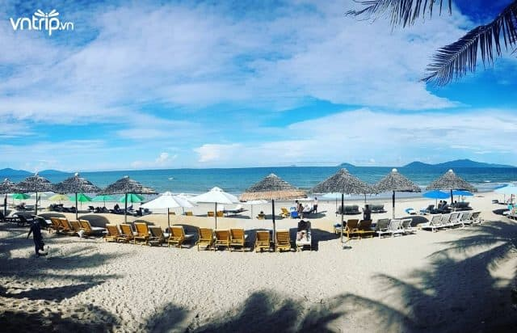
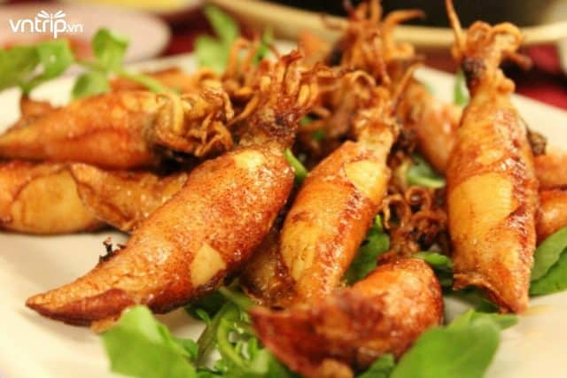
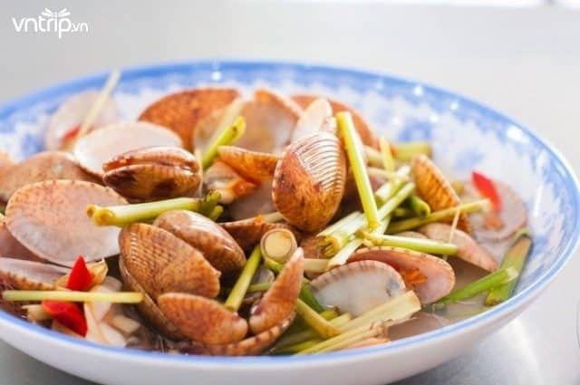
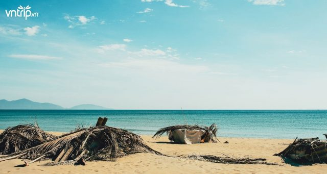
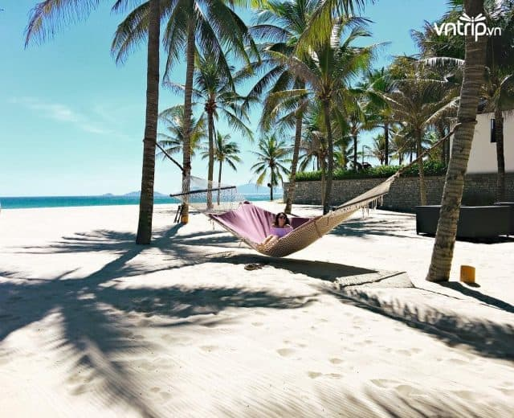
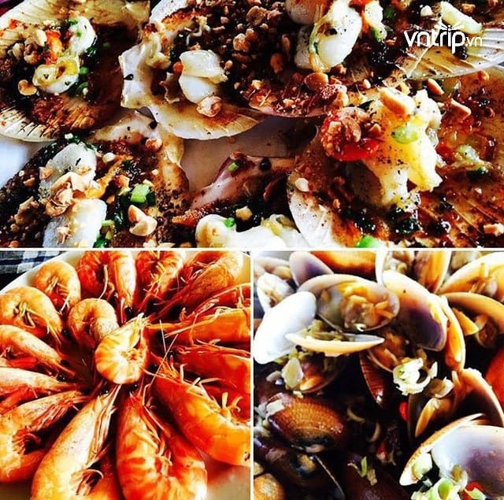
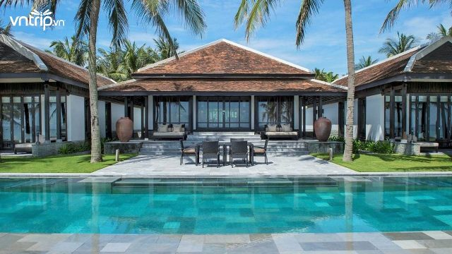

Những bãi biển Hội An đẹp nhất đáng để bạn “oanh tạc”
Khi nhắc về Hội An, đa phần mọi người sẽ nghĩ ngay đến phố cổ Hội An,chùa Cầu , sông Hoài với vẻ đẹp cổ kính, giản dị, làm say đắm biết bao du khách mà quên đi rằng Hội An còn có những bãi biển đẹp đến nao lòng. Cùng đồng bọn lên kế hoạch “oanh tạc” những bãi biển đẹp nhất Hội An ngay thôi nào bạn ơi!
1. Bãi biển Cửa Đại – địa điểm du lịch nổi tiếng của Hội An
Nằm cách trung tâm phố Hội chỉ 5km, biển Cửa Đại là một trong những địa điểm du lịch nổi tiếng của Hội An. Đây chính là nơi hội tụ của ba con sông Thu Bồn, Trường Giang và Đế Võng trước khi đổ ra biển Đông. Biển Cửa Đại lôi cuốn du khách ngay từ những giây phút đầu tiên bởi triền cát trắng trải dài bất tận, bao quanh là những hàng dừa xanh cao vút rợp bóng.
Biển Cửa Đại với triền cát trắng mịn trải dài (Ảnh: @pinkie.bi)
Đắm mình vào làn nước biển trong xanh hay nằm phơi mình trên bãi cát tắm nắng, tận hưởng những làn gió mát rượi từ biển Cửa Đại sẽ mang đến cho bạn những phút giây thư giãn yên bình đến lạ thường.Đắm mình vào làn nước biển trong xanh hay nằm phơi mình trên bãi cát tắm nắng, tận hưởng những làn gió mát rượi từ biển Cửa Đại sẽ mang đến cho bạn những phút giây thư giãn yên bình đến lạ thường.
Dãy chòi lá nằm yên bình bên biển Cửa Đại (Ảnh: @danimc__)
Không chỉ được tắm biển thỏa thích hay tham gia vào các hoạt động hấp dẫn, du khách khi đến với biển Cửa Đại còn có cơ hội thưởng thức những món hải sản tươi ngon nổi tiếng tại đây như cá đuối nướng sả nghệ, mực chiên nước mắm, chíp chíp hấp sả,…
Mực chiên nước mắm (Ảnh: Sưu tầm)
Chíp chíp hấp sả (Ảnh: Sưu tầm)
2. Bãi biển Hà My – Một trong những bãi biển đẹp nhất Châu Á
Nằm trên tuyến đường ven biển nối thành phố Đà Nẵng và phố cổ Hội An, biển Hà My là cái tên còn khá mới mẻ trên bản đồ du lịch Hội An, tựa như một “nàng tiên say ngủ” khi vẫn giữ được nguyên vẹn nét trong trẻo, hoang sơ vốn có. Hà My mê hoặc du khách bởi bờ cát trắng phau, nước biển xanh, trong vắt cùng những hàng dương, rặng dừa nước rợp bóng trải dài ngút tầm mắt. Có lẽ chính vẻ đẹp quyến rũ ấy mà tháng 6 vừa rồi bãi biển Hà My đã được tờ Telegraph của Anh bình chọn là một trong 16 bãi biển đẹp nhất Châu Á.
Một nơi thích hợp để nằm dài cả ngày trên những bãi cát trắng mịn (Ảnh: Sưu tầm)
Tới Hà My, bạn sẽ chỉ muốn nằm dài cả ngày trên bãi cát trắng mịn tắm nắng hay dưới những tán dừa xanh mát, lắng nghe tiếng sóng vỗ rì rào, lặng ngắm khung cảnh thiên nhiên yên bình. Bạn sẽ khó mà có được những phút giây thư thái như vậy tại các bãi biển nổi tiếng khác.
Không ồn ào, chen lấn, ngỡ như đây là cả vùng biển của mình vậy! (Ảnh: Sưu tầm)
Dù địa điểm này còn khá mới, chưa được phát triển nhiều về du lịch nhưng bạn cũng không cần phải quá lo lắng về việc ở đâu, ăn gì vì ở đây có mọi thứ mang đến cho bạn một chuyến du lịch trọn vẹn. Đến với biển Hà My, bạn sẽ được thưởng thức nhiều loại hải sản tươi ngon với giá cực kì “hạt dẻ”.
Hải sản tươi ngon, giá cả phải chăng (Ảnh: Sưu tầm)
Xung quanh bãi biển có khá nhiều chỗ nghỉ từ bình dân đến sang chảnh để bạn có thể lựa chọn.
